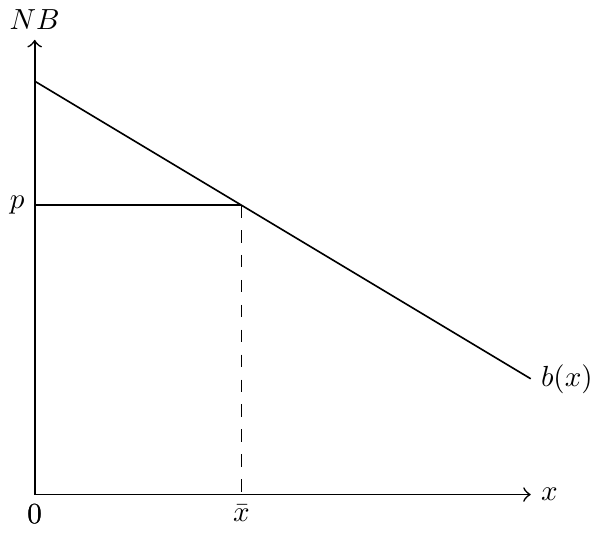
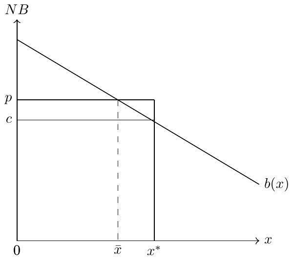

In-Class Problems and Solutions
These are the in-class problems we work through together during the semester, collected in one place with full solutions. Each solution is hidden by default. Work the problem first, then open the solution to check yourself.
Insurance
W1: Expected value
An individual starts with a wealth of $100,000. With probability 0.3, they will get sick and incur a cost of $40,000.
- What is this person’s expected cost of illness?
- Assume this individual has a utility function of the form, \(u(w) = w^{0.20}\). What is this person’s expected utility?
- Calculate this person’s utility if they were to incur the expected cost of illness. Is this utility higher or lower than what you found in part (2)?
NoteSolution
1. The expected cost is the probability of being ill (0.3) times the cost of being ill (40,000), \(E[cost]=0.3 \times 40,000 =\) 12,000.
2. Expected utility works the same as any expectation. The tricky part is that we use the utility function to find the values over which we form the expectation. Here we have two possible outcomes: healthy, which gives a wealth of $100,000; or sick, in which case we incur the cost of illness and end up with $60,000. So we find the utility associated with each possible wealth value, then take the expectation over those utility values.
- If healthy: \(u(w)|_{w=100,000} = 100,000^{0.2}=\) 10
- If sick: \(u(w)|_{w=60,000} = 60,000^{0.2}=\) 9.0288
Taking the expectation over these utility values yields \(E[u]=0.7 \times\) 10 \(+0.3 \times\) 9.0288 \(=\) 9.7086.
3. The expected cost of illness is 12,000, so the expected wealth is 88,000. We just need to calculate the utility at this expected monetary value, \(u=(88,000)^{0.2}=\) 9.7476. As should be the case, this is higher than the expected utility from part (2), because this envisions a risk-less scenario whereas the expected utility in part (2) envisioned a risky scenario.
W2: Insurance demand
Assume that utility takes the log form, \(u(x)=\ln(x)\). If someone is healthy, they maintain their current wealth of $100, and if they become ill, they must incur a cost of $50. Answer the following questions based on this setup.
- Calculate the risk premium and willingness to pay based on a probability of illness of 0.1.
- Repeat part (1) using a probability of illness of 0.2.
- Repeat part (1) using a probability of illness of 0.5.
- Explain how these values differ and why. What might this say about the profitability of insurance in a market with many sick people?
NoteSolution
1. To find the risk premium, we first need to calculate the expected utility, \(E[u]=0.1\times\ln(50) + 0.9\times\ln(100)=\) 4.536. Next, we need the monetary value that provides this same level of utility. So we need \(y\) such that \(u(y)=\) 4.536. Since our utility function is \(\ln(x)\), we know that \(y =\) exp(4.536) \(=\) 93.3. The risk premium is then the difference between this value and our starting wealth, less the expected cost of care, \(\pi =\) 100 \(-\) 93.3 \(-\) 5 \(=\) 1.697.
2. Repeating that same process yields an expected utility of 4.467. The monetary value that provides this level of utility with certainty is \(y =\) exp(4.467) \(=\) 87.06. The risk premium is \(\pi =\) 100 \(-\) 87.06 \(-\) 10 \(=\) 2.945.
3. Repeating that same process yields an expected utility of 4.259. The monetary value that provides this level of utility with certainty is \(y =\) exp(4.259) \(=\) 70.71. The risk premium is \(\pi =\) 100 \(-\) 70.71 \(-\) 25 \(=\) 4.289.
4. We see from these examples that the risk premium is increasing as the amount of uncertainty increases. If people are more certain about being ill, then the risk premium is lower. This means that people are unwilling to pay much more than the expected cost of care, leaving less potential profit for insurers.
W3: Adverse selection
Assume that the insurer’s cost function is given by \(C=100q - 2q^{2}\), where \(q\) denotes the number of people enrolled in the plan. Further assume that the inverse demand function takes the form, \(D=110 - 3q\), and that there are 20 individuals total in this market.
- If the insurer enters the market at a price of $65, what is the insurer’s profit (or loss)?
- What price does the insurer set next year if they set price equal to average cost in the prior year?
- What is the equilibrium price in this market?
- What if there is a $10 penalty imposed for those that do not purchase health insurance?
NoteSolution
1. We need to first calculate the marginal cost curve, \(mc=100-4q\), and the average cost curve, \(ac=100-2q\). At a price of \(p=65\), we know that quantity demanded will be \(q=\) 15. We can then calculate profit as total revenue less total cost, \(\pi = TR - TC =\) 975 \(-\) 1050 \(=\) -75.
2. Average cost at \(p=65\) is 70. So this is next period’s price.
3. The equilibrium price is such that insurers earn zero profits (under our assumptions). We can find that price by finding the quantity such that \(AC=p\). This occurs at \(110 - 3q = 100 - 2q\), or \(q=10\). The price at this quantity is 80. Note that the zero profit condition isn’t necessary to find an equilibrium in this way. We could easily incorporate some minimum “profit” per person by increasing the per unit costs in the cost function.
4. The penalty will effectively shift the demand curve out, as each individual is now willing to spend $10 more on health insurance. The new demand curve is then \(120 - 3q\). Setting this equal to the average cost curve yields \(q=20\). So a $10 penalty facilitates full insurance in this market.
Physician agency and treatment
W4: Physician agency
Denote the quantity of care consumed by \(x\), and denote by \(B(x)\) the function that determines the benefit of care to the patient. Assume that the patient must pay the full price of care, \(px\), so that their net benefit is \(NB=B(x)−px\).
- Find the patient’s optimal \(x\).
- Draw the marginal benefit on a graph and note the price and patient’s optimal quantity.
- Find the physician’s optimal \(x\) assuming \(NB^{0}=0\).
- Add the physician’s optimal \(x\) to your graph and interpret the difference.
NoteSolution
1. The patient just wants to maximize their net benefit, \(B(x) - px\). Taking the derivative and setting to 0, this means \(B'(x) = p\) (i.e., marginal benefit to the patient is equal to the patient’s marginal cost).
2.
3. The physician is profit maximizing, subject to the constraint that \(NB^{0}=B(x) - px=0\). Plugging this constraint into the profit function yields \(\pi = B(x) - NB^{0} - cx = B(x) - cx\). Taking the derivative and setting it to 0 yields the expression \(B'(x)=c\). So the physician also sets marginal benefit equal to marginal cost, they just focus on their own marginal cost instead of the marginal cost to the patient.
4.

W5: Agency and fixed prices
Assume \(B(x)=4x^{1/2}\), \(NB^{0}=0\), and \(c=1\). Further assume that prices are fixed administratively at \(\bar{p}=2\). Note that, in this case, we work only off of the patient’s net benefit constraint.
- What is the physician’s and patient’s optimal amount of care provided?
- The government is considering increasing the price to \(\bar{p}=3\). What are the new optimal levels of care for physicians and patients at this new price?
- How would the price change affect the difference between the patient and physician’s optimal amounts?
NoteSolution
1. The physician maximizes profit, \(\pi = px - cx\), subject to the constraint \(4x^{1/2} = px\). Since \(p\) is fixed, the physician simply sets \(x\) as high as possible, which means they set \(x\) to the point where the constraint binds. With \(p=2\), this means \(4x^{1/2} = 2x\), and solving for \(x\) means \(16x = 4x^{2} \longrightarrow 16=4x \longrightarrow x=4\).
The patient cares about maximizing net benefit, \(4x^{1/2} - 2x\). This is maximized at \(x\) such that \(2x^{-1/2}-2=0 \longrightarrow x=1\).
2. At this new price, the physician would choose \(x\) such that \(4x^{1/2} = 3x \longrightarrow 16x = 9x^{2} \longrightarrow 16=9x \longrightarrow x=\frac{16}{9}\). The patient would choose \(x\) such that \(2x^{-1/2}-3=0 \longrightarrow x=4/9\).
3. First, note that the amount of care decreases as the administrative price increases (opposite of the standard supply curve). Similarly, the deviation between the patient and physician optimal amounts decreases.
W6: Agency and payment type
Assume that the patient’s net benefit function is \(NB(x) = B(x) - p_{d}x\). Further assume that \(B(x)=16x-2x^{2}\) and that the patient is fully insured such that \(p_{d}=0\) (i.e., the insurer pays the full price of care, and the patient pays nothing). Finally, assume that the physician’s number of patients in their practice is governed by \(n(NB)=NB\). The physician receives a fixed payment, \(R\), per patient, along with a margin of \(p_{s}-c\) for each unit of care, \(x\). The same amount of care \(x\) is provided to each patient.
- What is the patient’s optimal amount of care?
- Write out the physician’s profit function.
- Find the physician’s optimal amount of care if \(R=0\) and \(p_{s}-c=1\).
- Find the physician’s optimal amount of care if \(R=1\) and \(p_{s}-c=1\).
NoteSolution
1. If they could, the patient would choose \(x\) to maximize their net benefit, \(B(x) - p_{d}x = 16x-2x^{2}\). This net benefit is optimized at \(x=4\).
2. The physician’s profit is simply their number of patients times the revenue per patient, \(\pi = n(NB) \left[R + (p_{s}-c) \right]\). Given the functional forms provided in this question, we can rewrite this as \(\pi = \left(16x - 2x^{2}\right) \left(R + (p_{s}-c)x\right)\).
3. To find the physician’s optimum, we must first take the derivative of the profit function and set this equal to 0, \(\frac{\mathrm{d}\pi}{\mathrm{d}x} = (16 - 4x)(R+ (p_{s}-c)x) + (p_{s}-c)(16x-2x^{2})=0\). Setting \(R=0\) and \(p_{s}-c=1\), this reduces to \((16-4x)x + 16x - 2x^{2} = 16x-4x^{2} + 16x - 2x^{2} = 32x-6x^{2}=0\). Solving for \(x\) yields \(x=5.33\). This is larger than the patient’s optimal, \(x=4\), which should be expected since there is a positive fee-for-service payment in this setup and no capitated payment.
4. Plugging these values into the same first order condition, we get \((16-4x)(1+x) + 16x - 2x^{2} = 6x^{2} - 28x - 16=0\). We can solve this with the quadratic equation, in which case \(x = \frac{28 \pm \sqrt{1168}}{12} \approx (-0.515, 5.181)\). Since we can’t provide negative care, we take the positive root so that \(x \approx 5.181\). While these numbers are small, the important part is that we’ve introduced a capitated payment \(R=1\) and managed to bring “overtreatment” down from 1.333 to 1.181. In other words, the inclusion of the capitated payment brought us closer to the patient’s optimal amount of care.
W7: Physician learning
Two physicians are considering adopting a new medical technology and are trying to determine its effectiveness, denoted \(\theta\). Both physicians are aware of a new clinical trial in which 70 out of 100 patients showed clinical improvement in their symptoms following treatment. The other 30 patients showed no meaningful improvement.
Physician 1 has no strong opinion for or against the new treatment and maintains a uniform prior, \(P(\theta) \sim Beta(\alpha_{0}=1, \beta_{0}=1)\). Physician 2 is highly skeptical of the new treatment and favors their current practice style, with a prior belief reflected by \(P(\theta) \sim Beta(\alpha_{0}=0.01, \beta_{0}=100)\).
- Find Physician 1’s updated belief as to the mean effectiveness of the new treatment.
- Find Physician 2’s updated belief as to the mean effectiveness of the new treatment.
- Based on these beliefs, which physician will more quickly adopt the new treatment?
NoteSolution
1. The posterior distribution is given by Bayes’ rule. Denoting Physician 1’s initial beliefs by \(\alpha_{0}\) and \(\beta_{0}\), the posterior simplifies as follows:
\[\begin{align} P(\theta | y) &= \frac{P(y| \theta) P(\theta)}{P(y)} \\ & \propto \frac{ {100 \choose 70} \theta^{70} (1 - \theta)^{100 - 70} \theta^{\alpha_{0}-1} (1 - \theta)^{\beta_{0}-1} } { B(\alpha_{0}, \beta_{0}) } \\ & \propto \frac{ {100 \choose 70} \theta^{\alpha_{0}+70-1} (1 - \theta)^{\beta_{0}+100-70-1} } { B(\alpha_{0}, \beta_{0}) } \\ & \propto Beta(\alpha_{0}+70, \beta_{0} + 100 - 70) \end{align}\]
This is a Beta distribution with shape parameters \(\alpha_{1}=\alpha_{0} + 70\) and \(\beta_{1}=\beta_{0}+100-70\). We know from class that the mean of the Beta distribution is given by \(\frac{\alpha}{\alpha + \beta}\). So the physician’s (mean) updated belief on the effectiveness of this new treatment is \(\frac{71}{102}\), or 70%.
2. First note that Physician 2’s initial beliefs amount to a very strong negative prior, with mean effectiveness of \(\frac{0.01}{100.01}=\) 0%. As in Part 1, the updated probability of effectiveness will again follow a Beta distribution with shape parameters \(\alpha_{1}=\alpha_{0} + 70\) and \(\beta_{1}=\beta_{0}+100-70\). But in this case, \(\alpha_{0}=0.01\) and \(\beta_{0}=100\), and the physician’s (mean) updated belief on the effectiveness of this new treatment is \(\frac{70.01}{200.01}\), or 35%.
3. Physician 2’s strong negative prior significantly impacts their future decision-making process, such that they place much lower probability on the effectiveness of treatment despite observing the same trial data as Physician 1. So Physician 1 will be more likely to adopt this treatment going forward. This scenario underscores how physician beliefs can influence the trajectory of technology adoption and contribute to differential treatment patterns across and even within markets.
Hospital pricing and competition
W8: Not-for-profit hospitals
Consider a not-for-profit hospital with utility function \(u(q,z)\), where \(q\) denotes quantity and \(z\) denotes quality of care. Using only a graphical approach, answer the following questions.
- The hospital’s market expands insurance access so that more people can now purchase health care. What might this do to quantity and quality?
- There is a contraction of nursing supply in the hospital’s market, such that the hospital must offer higher wages to its nurses to maintain staff. What might this do to quantity and quality?
NoteSolution
1. Insurance expansion will tend to shift demand curves out for every level of quality. This will shift the production possibilities curve out, allowing the hospital to produce more of both quality and quantity.
2. Higher wages will increase the hospital’s average cost of production, shifting the production possibilities curve in. This will tend to reduce both quantity and quality.
W9: Unilateral pricing
Consider the firm’s inverse demand curve, \(d=40-2q\), and cost curve, \(c(q)=5q+\frac{1}{2}q^{2}\).
- What is the firm’s profit maximizing price and quantity?
- What is the firm’s markup over marginal cost?
NoteSolution
1. To solve this, we just need to maximize the firm’s profit with respect to quantity, \(q\). Then we substitute the optimal quantity into the demand function to find the optimal \(p\). The profit function in this case is \(\pi=d(q) \times q - c(q) = (40-2q)q - 5q - \frac{1}{2}q^{2}\). Differentiating and setting equal to 0 yields \[-2q + 40 - 2q - 5 - q = -5q + 35 = 0.\] This holds for \(q=7\). Plugging \(q=7\) into the demand function then yields \(p=40-14=26\). So the firm optimally sets a price of \(p=26\) and sells a quantity of \(q=7\).
2. We can find the marginal cost at \(q=7\) by plugging this quantity into the marginal cost function, \(c'(q) = 5 + q = 12\). Since the firm’s price is \(p=26\), we know the markup over marginal cost is 14. We usually think of this in percentage terms, where we calculate the markup relative to marginal cost, \(\frac{p-c}{c} = \frac{14}{12}\). So the markup is more than 100% of the cost.
W10: Two-price market
Consider the firm’s inverse demand curve in the private insurance market, \(d=16-q\), and costs, \(c(q)=5+q^{2}\). Assume that there exists a public insurer that pays a fixed price of \(\bar{p}=10\).
- How many private patients will the provider serve?
- How many public patients?
- What if \(\bar{p}\) drops to $9?
NoteSolution
1. The practice will serve private insurance patients until the marginal revenue from those patients falls below the marginal revenue of a public patient. In this case, the marginal revenue of a public patient is \(\bar{p}=10\). The marginal revenue of a private practice is \(16-2q\). These are equal at \(q=3\). So the practice will see 3 private insurance patients.
Note, we should check first that the practice will see any public patients. The way to do this is to make sure that the marginal revenue from a public patient is above the marginal revenue of \(MR=MC\) in the private market. In this case, \(MR=MC\) at \(q=4\) and \(MR=8\). This is below \(\bar{p}=10\), so the practice will serve some portion of the public market whenever \(\bar{p}>8\).
2. The practice will see patients to the point where \(MR=\bar{p}=MC\), which holds for \(2q=10\), or \(q=5\). Combined with our answer in part 1, the practice will see 3 private insurance patients and 2 public insurance patients.
3. In this case, the practice will again see total patients to the point where \(MC=\bar{p}\). This holds for \(2q=9\), or \(q=4.5\). The practice will switch to the public market at \(MR=\bar{p}\). This holds for \(16-2q=9\), or \(q=3.5\). So the drop in the fixed payment rate will lead to an increase in the number of private insurance patients seen (from 3 to 3.5), and a decrease in the number of public patients seen (from 2 to 1). The total number of patients seen in this case also decreases (from 5 to 4.5).
W11: Nash bargaining
Assume that two agents are negotiating over how best to divide their quantity of good \(x\), which is normalized to 1. If the players reach an agreement, player 1 receives utility \(u_{1} = x\), and player 2 receives utility \(u_{2} = (1-x)\). If the players do not reach an agreement, player 1 receives a payoff of \(t_{1} = 0\), and player 2 receives payoff \(t_{2} = a > 0\).
- Find the Nash bargaining solution to this game.
- Explain how this solution varies with \(a\).
NoteSolution
1. The Nash bargaining solution is to maximize \(x(1-x-a)\) (i.e., the product of each person’s payoff under agreement less their payoff under disagreement). We can find the solution by differentiating with respect to \(x\) and setting equal to 0, which yields \(1-2x - a = 0\), or \(x=\frac{1}{2}(1-a)\).
2. As \(a\) increases, \(x\) decreases. Intuitively, this means that as player 2’s outside option improves, less of the total amount \(x\) goes to player 1. In other words, if player 2 has the least to lose in the negotiation, then player 2 will extract a larger share of the joint surplus.
Pharmaceuticals
W12: Pharmaceutical pricing
Consider a pharmaceutical firm setting its price for a brand name drug (i.e., patent protected) with no relevant substitutes. The inverse demand function for this drug is given by \(P = 100 - 3q\), with cost function \(c(q) = 2q\).
- Find the profit maximizing price without insurance.
- Introduce insurance by way of a coinsurance rate, \(\alpha=0.5\).
- Briefly explain the role of coinsurance on pharmaceutical pricing and demand.
NoteSolution
1. To find the profit maximizing price, we need to first find the profit maximizing quantity by forming the profit function, differentiating with respect to \(q\), and setting equal to 0. The profit function is given by \(\pi = (100-3q)\times q - 2\times q\). Differentiating with respect to \(q\) yields \(\frac{d\pi}{dq} = 100 - 6q - 2 = 0\). Solving for \(q\) yields \(q = 16.3\). Plugging this into the inverse demand function yields \(P = 100 - 3\times 16.3 = 51\). Thus, the profit maximizing price is \(P = 51\).
2. The coinsurance rate is the fraction of the price that the consumer pays. Thus, the consumer pays \(\alpha \times P\) and the insurance company pays \((1-\alpha)\times P\). The inverse demand function is therefore scaled up, such that \(P = \frac{100-3q}{\alpha}\). The profit function is therefore given by \(\pi = \frac{100-3q}{\alpha}\times q - 2\times q\). Differentiating with respect to \(q\) yields \(\frac{d\pi}{dq} = \frac{100- 6q}{\alpha} - 2 = 0\). Setting \(\alpha=0.5\) and solving for \(q\) yields \(q = 16.5\). Plugging this into the inverse demand function yields \(P = \frac{100 - 3\times 16.5}{0.5} = 101\). Thus, the profit maximizing price is \(P = 101\).
3. Coinsurance reduces the price sensitivity of consumers. This is because the consumer only pays a fraction of the price, and thus is less sensitive to the price. This allows the firm to increase the price. However, consumers remain responsible for some portion of price increases, unlike the case of copayments where consumers are shielded from price increases beyond the copayment amount. Not surprisingly, we see insurers opting for coinsurance over copayments when covering high cost brand name drugs.